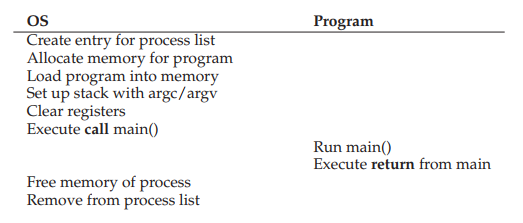
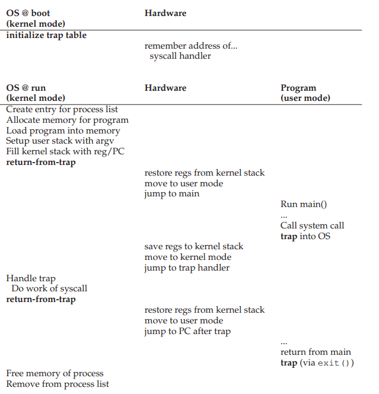
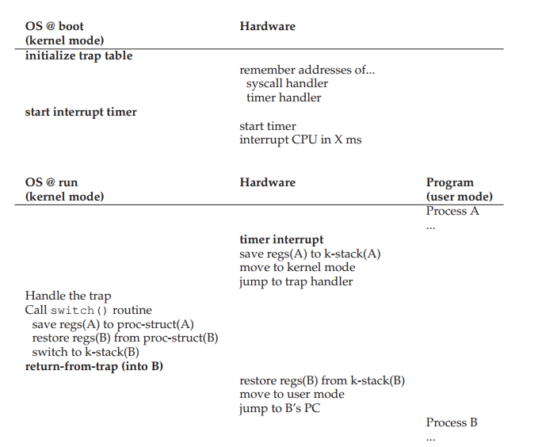

Limited Direct Execution
Contents
Limited Direct Execution#
Key concept
Virtualization of the CPU must be done in an efficient manner. At the same time, the OS must retain control over the system. This is accomplished by combining user/kernel modes, trap table, timer interrupt, and context switching.
1. CPU virtualization recall#
To support the illusion of having multple processes running concurrently on a single physical CPU, we can have the CPU run one process for a while, then run another, and so on.
This is called time sharing.
2. Design goals of CPU virtualization#
Performance
The process can be itself and run as fast as possible without frequent interaction with the OS.
Control
We want to avoid the scenario where a process can run forever and take over all the machine’s resources or a process performs unauthorized actions. This requires interaction with the OS.
3. The question!#
How to efficiently virtualize the CPU with control?
4. Efficient#
The most efficient way to execute a process is through direct execution.

Once the program begins to run, the OS becomes a complete outsider.
No control over the running program.
Problem 1: The program can access anything it wants to, including restricted operations (direct access to hardware devices, especially I/O for unauthorized purposes).
Problem 2: The program may never switch to a different process without explicit instructions in main(), thus defeating the purposes of time-sharing.
5. Problem 1: working with restricted operations#
The process should be able to perform restricted operations, such as disk I/O, open network connections, etc.
But we should not give the process complete control of the system.
Rephrase: The process should be able to have its restricted operations performed.
Solution: hardware support via processor modes
User mode
Kernel mode
6. Process modes#
A mode bit is added to hardware to support distinguishing between user mode and kernel mode.
Some instructions are designated as privileged instructions that cannot be run in user mode (only in kernel mode).
A user-mode process trying to perform privileged instructions will raise a protection fault and be killed.
How can these instructions be called by a process in user-mode?
System calls
7. System calls#
A small set of APIs for restricted operations.
Linux x86_64 has 335 systems called (0 to 334) - Last commit June 2, 2018.
Linux uses a sys_call_table to keep the syscall handlers.
These system calls enable user-mode process to have restricted operations performed without having to gain complete control over the system.
8. How does a system call happen?#
To make a system call, the process need to switch from user mode to kernel mode, do the privileged operation, and then switch back.
This is done through hardware support
Require assembly instructions
trap: go from user mode to kernel mode.
return-from-trap: go back from kernel mode to user mode.

9. System calls versus normal C calls?#
Function declarations are the same
System calls
Have trap instruction in them
have extra level of indirection (movements between modes).
perform restricted operations
have bigger overhead and are slower than equivalent function calls.
can use kernel stack.
10. Names of system calls#
User space definition:
Kernel definition:
The user space definition will eventually call the kernel definition.
11. Problem 2: switching processes#
A free running process may never stop or switch to another process.
OS needs to control the process, but how?
Once a process is running, OS is NOT running (OS is but another process)
The question: How can OS regain control of the CPU from a process so that it can switch to another process?
12. First approach: cooperative processes#
All programmers promise to insert yield() into their code to give up CPU resources to other people’s program.
We have solved the problem and achieved eternal world peace.
Even in a perfect world, what happens if a process falls into an infinite loop prior to calling yield()?
Collaborative multitasking (Windows 3.1X, Mac PowerPC)
13. Second approach: non-cooperative processes#
Similar to processor modes, the hardware once again provided assistance via timer interrupt.
A timer device can be programmed to raise an interrupt periodically.
When the interrupt is raised, the running process stops, a pre-configured interrupt handler in the OS runs.
The OS regains control.
14. Second approach: non-cooperative processes#
The OS first decides which process to switch to (with the help from the scheduler).
The OS executes a piece of assemble code (context switch).
Save register values of the currently running process into its kernel stack.
Restore register values of the soon running process from its kernel stack.
